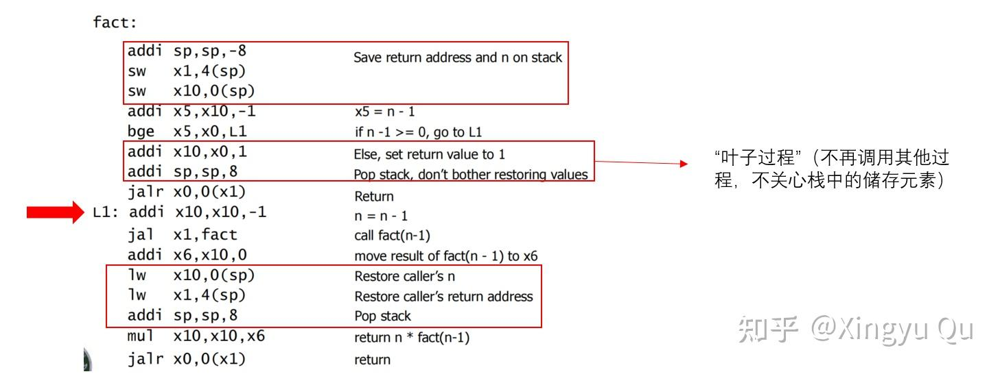
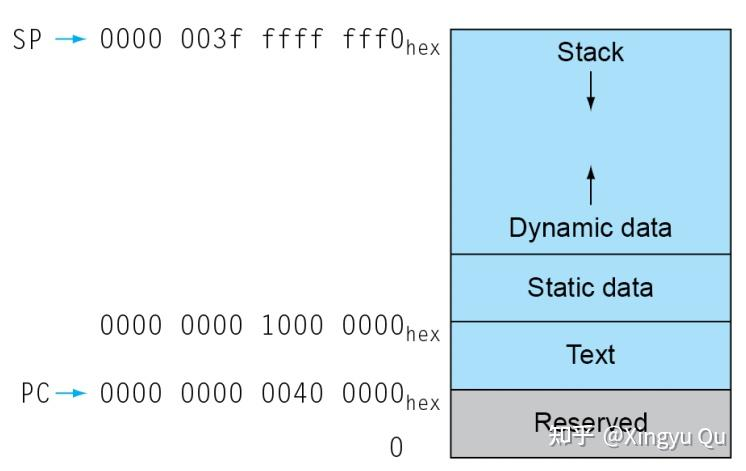
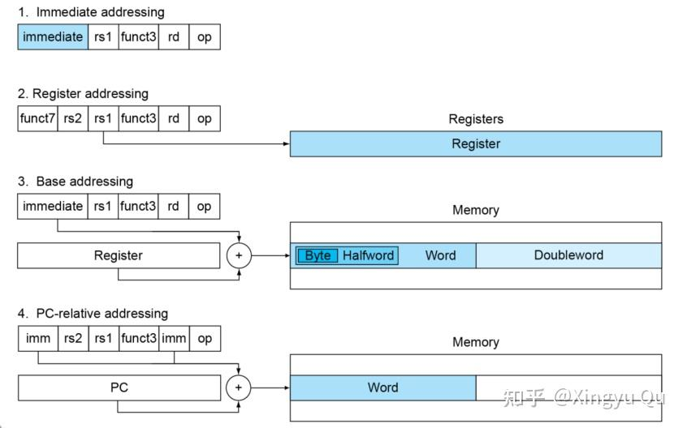

概述
上一讲介绍了RISC-V的指令架构，并介绍了过程调用的机制：
- 传参（默认x10~x17按传参顺序为参数寄存器）
- 转移控制权（PC改变，并保存原来的PC+4）
- 获取过程调用所需的存储资源（sp为x2寄存器）
- 执行过程（x5~x7,x28~x31存储临时变量，为调用者保存；x8~x9,x18~x27为被调用者保存寄存器）
- 返回结果（默认返回寄存器为x1）
- 返回PC
本讲介绍过程调用中的细节，并了解RISC-V中堆栈的空间分配、寻址模式、原子操作等。
（一）过程调用——以递归函数为例
RISC-V ABI 使用 x10–x17（a0–a7）传递参数，使用 x10–x11（a0–a1）返回标量值，并通常使用 x1（ra）保存返回地址。嵌套调用需要按照调用约定保存必要的寄存器，栈与栈指针用于管理这些调用状态。
1.递归函数中栈的变化
int fact (int n)
{
if (n < 1) return f;
else return n * fact(n - 1);
}
翻译成的汇编代码如下：

该递归过程需要保存参数 n 与返回地址。每次进入函数时，栈指针向低地址移动 8 字节；返回前再恢复保存的值。
x2（sp）是栈指针；x8（s0）可按 ABI 约定作为可选的帧指针。帧指针在函数执行期间提供稳定的栈帧基准，超出参数寄存器容量的参数则通过栈传递。
2.一些过程可以不使用递归而改用迭代实现。
int sum(int n,int acc){
if(n>0) return sum(n-1, acc+n);
else return acc;
}
考虑上面代码n=3的情况，可以转成如下的迭代版本汇编：
sum: ble x10, x0, sum_exit
add x11, x11, x10
addi x10, x10, -1
jal x0, sum
sum_exit:
addi x12, x11, 0
jalr x0, 0(x1)
这种版本的代码可以减少递归调用的部分开销。
3. 数据存储
并不是所有的变量都保存在栈上：

text：代码段
static data: 存储静态变量，C语言中的数组、字符串等
dynamic data: 堆，例如C中的malloc，java中的new
（二）寻址模式
RISC-V支持四种寻址方式：
1.立即数寻址：I型指令，操作数是指令本身的常量
2.寄存器寻址：R型指令，操作数在寄存器中
3.基址或偏移寻址：I型指令，操作数在寄存器中
4.PC相对寻址：B型指令

（三）原子操作
1.多处理器下的竞争
当硬件存在多处理器时，处理器之间的读写操作容易存在竞争。因此，系统设计了加锁、解锁等同步操作，可以创建只有单处理器可以操作的区域，保证数据一致性。
2.双指令对的解决方案
RISC-V设计了一对指令，其中第二个指令返回一个值，该值表示该指令对是否被原子执行。如果任何处理器执行的其他操作发生在这对指令之前或之后，则该指令对实际上是原子的。
保留加载： lr.w x10, (x20) 将x20中的地址存到x10中
条件存储：sc.w x11, x23, (x20) 判断x11锁变量之后将尝试x23存入x20的地址
以原子交换为例，完整的指令序列如下：
again: lr.w x10, (x20)
sc.w x11, x23, (x20)
bne x11, x0, again
addi x23, x10, 0
每当处理器干预并修改lr.w和sc.w之间内存中的值时，sc.w就会将非0值写入x11，导致代码序列重新执行。
3.注意
（1）同步虽然是多处理器语境下的，但是原子交换对于单处理器处理多个线程也有用。如果处理器在两个指令之间对上下文进行切换，条件存储也会失败
（2）原子交换只是“同步原语”中的一种，实现更多“同步原语”需要在lr.w 和 sc.w 之间加入其他指令
（3）保证分支跳转能够执行，否则会出现死锁情况
总结：
汇编层面的原子指令是构建锁等同步原语的基础，实际实现还需结合内存模型与并发语义。